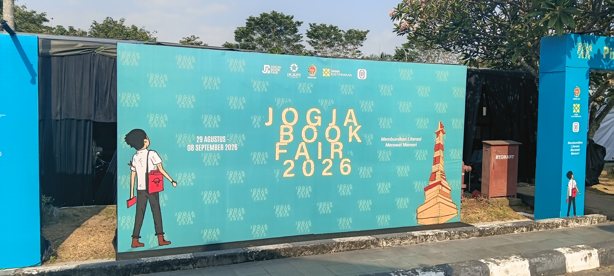
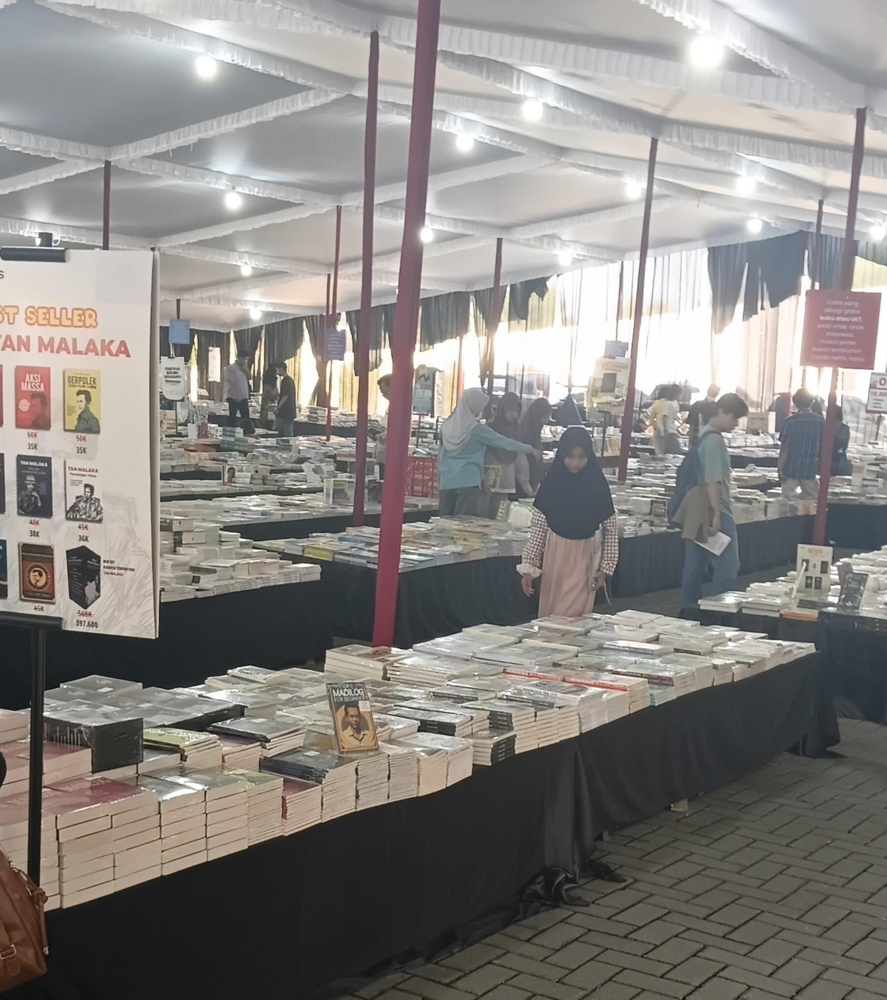

Diary #1
'A beautiful morning.'
Yesterday, i planned to walk after being absence for two days. Nevertheless, it was failed anymore because the awkwardness to be stared by others in roads. So, the morning passed without being productive. Lazy.. Lazy.. and Lazy..
Fortunately, my mom has arrived and my selfish
Diary #5
Wake up in the wonderful morning because i'm going to meet kyky to do an important agenda: "shopping items for Seserahan". We take some times to finish preparations for our wedding next month. Thanks to MATAHARI store Jogja City Mall 👍!, we are ultimately get items that we want:
Those are Rp609,500 in total.
Next, we have lunch at Palagan Street.
It is a cozy place of SS's branch we've ever visit and the food portion is larger than others. However, i attacked a stomach afterwards because of eating some spicy foods.
Diary #7
25/8/2026
Upload: 25/8/2026
Thank God for these chances 🤲. For six days, I've been consistently doing sport (cardio) every morning at Sembego's Football Field. My body feels more healthy and being more confident to face activities everyday. See the following data:
- 19/8/26; 07:54; WALKING Dur:39'34"; Steps:4436; Avg.Spd:5.7km/j;
Total Steps: 5651/day - 20/8/26; 07:49; WALKING Dur:1*7'39"; Steps:7646; Avg.Spd:5.6km/j;
Total Steps: 8989/day - 21/8/26; 08:56; RUNNING Dur:9'31"; Dist:1.56km; Avg.Pc:6'4";
Total Steps: 5901/day - 22/8/26; 06:24; RUNNING Dur:12'25"; Dist:2km; Avg.Pc:6'11";
Total Steps: 6007/day - 23/8/26; 07:57; RUNNING Dur:11'34"; Dist:2km; Avg.Pc:5'45";
Total Steps: 9093/day - 25/8/26; 07:56; RUNNING Dur:11'46"; Dist:2km; Avg.Pc:5'52";
Total Steps: 5696/day (temp)
Next days, I'll set a rehearsal program to increase my pace and distance. The program helped by AI for at least not to impose myself and keep the body safe. Bismillah 🤲.
Today is Tuesday. Okay, the following is my next program in this week:
- Wednesday, 26/8/2026 -- RECOVERY with EASY WALK 20-40 minutes
- Thursday, 27/8/2026 -- EASY SPEED 4x400 meters, target pace 5.50-5.30/km
- Friday, 28/8/2026 -- STRENGTH 20-25 minutes
- Saturday, 29/8/26 -- REST
- Monday, 30/8/26 -- LONG EASY RUN 3-3,5 km
Diary #8
27/8/2026
Upload: 27/8/2026
You know "Every job doesn't always going smooth." Aku merasa pekerjaan hari ini tidak sebagus yang kemarin. Kadang ada momen ketika kita sedang di atas angin, kadang ada di bawah tanah. TIDAK SELALU MULUS.
Program Wednesday (26/8) dan Thursday (27/8) telah tercapai. Kemarin aku melakukan EASY WALK selama satu jam lebih empat menit dan hari ini EASY SPEED 4x400 meter dengan pace 5'41", 5'11", 5'29", 5'08".
Diary #9
29/8/2026
Upload: 29/8/2026
Hi, diari ke-9. Hari ini campur aduk perasaan antara bahagia dan sedih. Pekerjaan di hari Sabtu ini terasa sukses Alhamdulillah, Thank God 🤲, karena aku mengajar empat kelas dimana keempat-empat-nya merupakan kelas yang ternyata antusias dan bersemangat untuk belajar. Dan yang paling mengindahkan suasana hatiku adalah mereka semua terlihat seperti menikmati pengajaranku. Luwes sekali pergerakanku selama bekerja dari jam 8 pagi hingga 6 sore tadi. Semoga pencapaian-pencapaian ini bisa terus terjadi padaku selama aku bekerja di Star Winner, Aamiin 🤲.
Jedag-jedug detak jantung mengiringi malam minggu ini. Rapat karang taruna dilaksanakan tepat sebelum jam 9. Aku berangkat ke tempat rapat yang lokasinya hanya puluhan langkah dari rumah. Sejak tadi siang aku menyusun kata-kata yang rencananya akan aku sampaikan di pertemuan rapat malam ini sebagai tanda PAMIT ku kepada teman-teman karang taruna. Ya, karena ini adalah rapat terakhirku di organisasi ini. Bulan berikutnya statusku sudah berganti. Jika melihat para senior yang sudah lebih dulu menikah, mereka selalu berpamitan pada rapat terakhir mereka.
Setelah tersusun dengan rapi tulisan tersebut, aku berangkat dengan percaya diri. Sudah aku ulur-ulur waktu agar terlambat hadir, malah ternyata aku yang menginisiasi rapat dimulai. Selang berjalannya rapat, pandanganku masih kosong. Informasi rapat terlihat masuk telinga kanan dan keluar dari telinga kiri. Aku sibuk menghafal tulisan tadi dengan harapan supaya lancar dalam berbicara nanti. Aku berharap yang terbaik.
Namun, di saat momen itu tiba. Ketua pemuda sudah memberi isyarat padaku untuk menyampaikan ucapanku. Akan tetapi, entah mengapa mulut ini lebih memilih untuk berkata "Tidak Usah Gapapa". Alhasil, tulisan yang sudah kususun sejak siang hari hanya menjadi tulisan hingga di penghujung hari ini. Tak ada sepatah kata pun yang terucap dari mulutku yang terarah ke bahkan satu teman pun. Mungkin satu sisi aku merasa tidak pantas untuk berbicara kepada teman-teman yang mana aku sendiri juga sudah lama sekali tidak berjumpa dengan mereka dalam sebuah kegiatan karang taruna. Which is aku sendiri tidak aktif akhir-akhir ini. Sempat terpikir, "Kamu siapa? sok ingin pamit. Nongol aja nggak pernah". Di sisi lain terasa seperti sebuah kecanggunan yang teramat sangat melihat teman-teman belum mengetahui bahwa sebentar lagi aku akan menikah. Bahkan salaman saat pulang pun canggung parah dan mulut ini sulit sekali mengucapkan informasi penting ini kepada mereka.
Pada akhirnya sih, cepat atau lambat mereka pasti akan mengetahui. Aku yakin informasi semacam ini akan cepat menyebar bagai angin.
Ya Allah, aku memohon ampun jika masih banyak dosa yang aku pernah perbuat. Lindungilah harga diriku dimanapun, kapanpun, dan dalam kondisi apapun. Selalu tuntun aku ke jalan yang lurus. Ridhoi setiap langkahku dan beritahu aku jika langkah yang aku ambil adalah sebuah kesalahan. Aamiin Yaa Robbal Alaamiin 🤲.
Diary #10
30/8/2026
Upload: 30/8/2026
Hari Ahad ya ini?.
Bangun pagi jam 6 lebih. Aku tinggal di Kampung Manisrejo, yang tepat di pagi ini melaksanakan agenda JALAN SEHAT seluruh warga. Saya termasuk warga yang akhir-akhir ini tidak taat. Banyak agenda-agenda yang aku lewatkan sehingga tidak sedikit pengalaman yang tidak terambil. Termasuk jalan sehat itu. Hati ini cenderung memilih olahraga lari seperti biasanya walau akhirnya tidak terlaksana karena pagi itu ternyata aku punya tanggung membuatkan minuman untuk para tukang yang mulai bekerja di rumahku tepat pada pukul 8 pagi. Itu adalah perintah dari Sang Ibu.
Pagi, pukul 10 lebih beberapa menit, merupakan waktu kami (aku dan kiki) bersilaturahmi dengan atasan kantor tempat kami bekerja. Walaupun berbeda kantor, kami memiliki atasan yang sama. Menariknya, silaturahmi kami tidak terjadi di rumah beliau, tetapi di sebuah kafe baru bernama d'aroom cafe di jalan bantulan. Tujuan utama kami adalah memohon doa restu dari beliau dan memohon izin cuti pada tanggal yang telah disepakati. Tak disangka kurang lebih 4 jam kami bertahan di kafe tersebut dengan hanya sekali memesan F&B. Pertemuan itu sangat berkesan karena kami semua saling bertukar informasi, cerita, dan canda gurau yang seru.
Sepulang dari agenda itu, aku mampir ke Grhatama Pustaka untuk menyambangi event Jogja Book Fair 2026. Iseng-iseng saja aku mencari buku yang kira-kira bisa aku miliki. Banyak buku yang terdiskon dan buku yang tetap dengan harga mahal pun juga ada. Bahkan ada suatu meja dengan buku-buku berserakan yang di atasnya tertulis: "Cukup bayar 75 ribu saja Anda bisa ambil buku sepuasnya", tetapi hanya untuk buku dengan penerbit Graha Ilmu. Aku hanya menggendoli satu buku berjudul Enggak Lari Enggak Keren karya Agus Hermawan, seharga 20 ribu. Tak jauh dari pameran buku tadi, ada tempat dengan panggung dan kursi-kursi rapi. Dua Master of Ceremony mengumumkan bahwasanya akan diadakan "workshop intesif menulis artikel" di tempat itu. Aku bimbang, antara ingin ikut atau tidak ingin ikut. Alasan "ingin": karena pasti akan mendapat ilmu dan belum tentu bisa mendapatkan kesempatan tersebut di lain waktu. Alasan "tidak ingin": karena waktu itu sudah kesorean. Aku harus pulang karena pikiran sedang tertuju pada olahraga lari.


Sepanjang jalan aku memikirkan tempat untuk lari sore hari ini. Akan kah di lapangan sembego seperti biasanya?. Sesampainya di rumah, ada mobil suzuki terparkir di teras rumah tengah. Beberapa detik aku tersadar bahwa calon tunangannya mbakku, Mas Fadlun, sedang bersilaturahmi sore itu. Setelah memasuki rumah, dengan segera Ibu memanggilku dan menyuruhku untuk segera menemui tamu yang datang. Beliau seorang diri, berpakaian rapi, menggunakan kemeja abu-abu, perawakan cukup gendhut, serta bersih. Tampak-tampak orang berada. Terbukti jelas beliau memang seorang ustadz sekaligus dozen, bagaimana tidak? kehidupan kampus beliau hapal tiap detailnya, serta hapalan haditz-nya yang aku sendiri pun tak tahu. Dari pertemuan itu, aku hanya berharap yang terbaik untuk kehidupan mbakku di masa depan.
Mas Fadlun pamit pulang sekitar 20 menit sebelum adzan maghrib berkumandang. Tahu apa yang aku lakukan? Aku memilih untuk lari dengan waktu yang kurang baik menurutku. Harusnya sih menunggu waktu maghrib dulu dan solat sebelum lari. Tanpa pikir panjang aku lari di aspal jalan raya selama 18 menit, sejauh 3 kilometer, dengan pace rata-rata 6.10. Itu pun dengan waktu istirahat (berhenti) kurang rata-rata 2-3 menit. Aku tahu waktunya kurang tepat, tetapi secara pribadi aku lebih menyukai memanfaatkan waktu sesempit mungkin untuk melakukan hal baik yang sudah aku tunda berhari-hari, yaitu konsistensi berlari. Aku berharap LARI adalah olahraga pilihan yang tepat untuk investasi kesehatanku jangka panjang.. Aamiin Yaa Robbal Alaamiin 🤲.
Diary #11
1/9/2026
Upload: 2/9/2026
Beberapa hal yang sudah aku tunaikan hari ini:
- Running
- Cek kesehatan caten (calon penganten)
- Sowan ke Pak RW dan Pak RT
- Laden tahlilan Alm. Nyai Mbah Surat
Cerita lengkapnya aku uraikan di bawah ini.
Tidur dengan bantal yang keras membuat leher pegal tak karuan ketika bangun pukul 5.30 pagi.